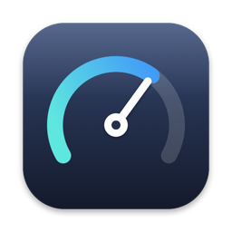
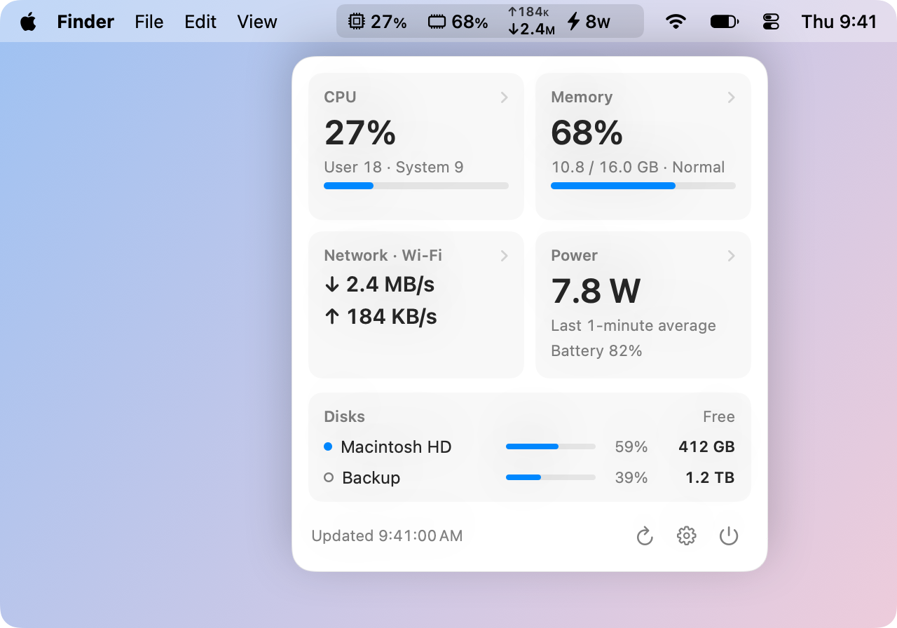
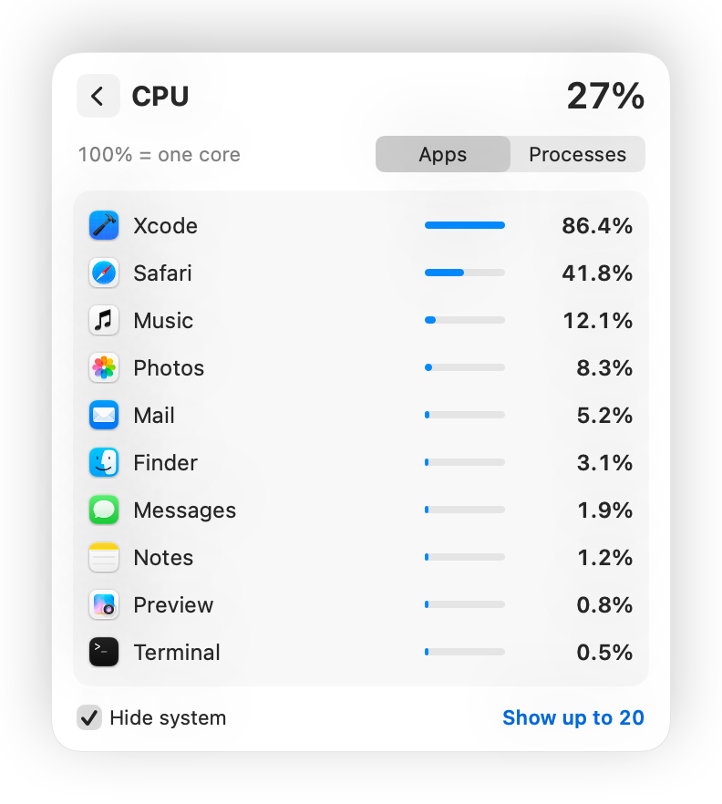
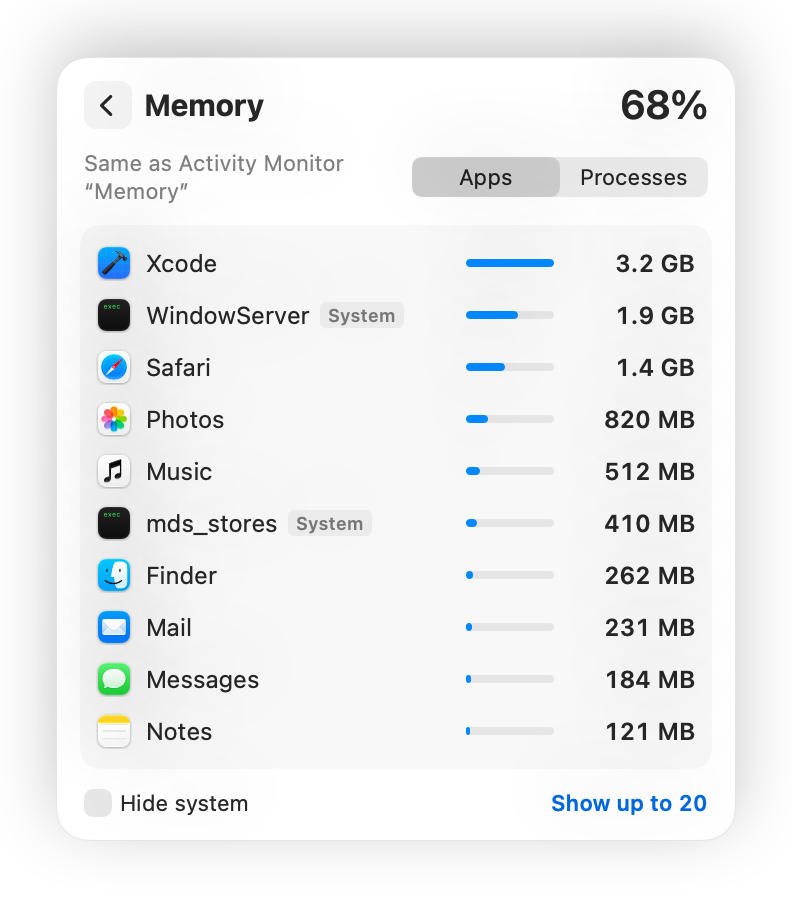

Readout
A small menu bar app that shows the current state of your Mac at a glance: CPU, memory, disks, network, and power.
Download the latest versionRequires a Mac with Apple silicon (M1 or later) and macOS 26 Tahoe or later.

Installation
- Download
Readout-x.y.z.dmgfrom the release page and open it. - Drag Readout into the Applications folder.
- Launch Readout from the Applications folder. A gauge icon appears in the menu bar.
Updates
Readout checks for updates once a day. When a new version is available, choose Install Update and Readout will download, verify, and install it, then relaunch. You can also right-click the menu bar icon and choose Check for Updates…. Settings are preserved across updates.
Features
- Click the menu bar icon for a panel with CPU, memory, network, power, and every mounted disk with its free space
- Click a tile to see the top 10 or 20 apps or processes by CPU, memory, network, or power
- Metrics mode shows the values you choose right in the menu bar, in the order you choose
- Light on your Mac: in icon-only mode nothing is read in the background, and sleeping external hard drives are never woken
- Korean and English — choose the language in Settings


License
PolyForm Noncommercial License 1.0.0. Readout may be used and shared freely for noncommercial purposes. Commercial use is not permitted.